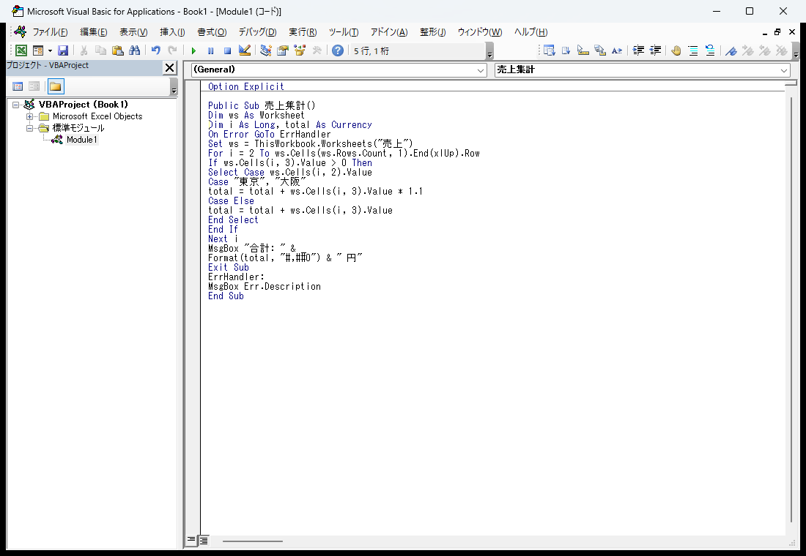
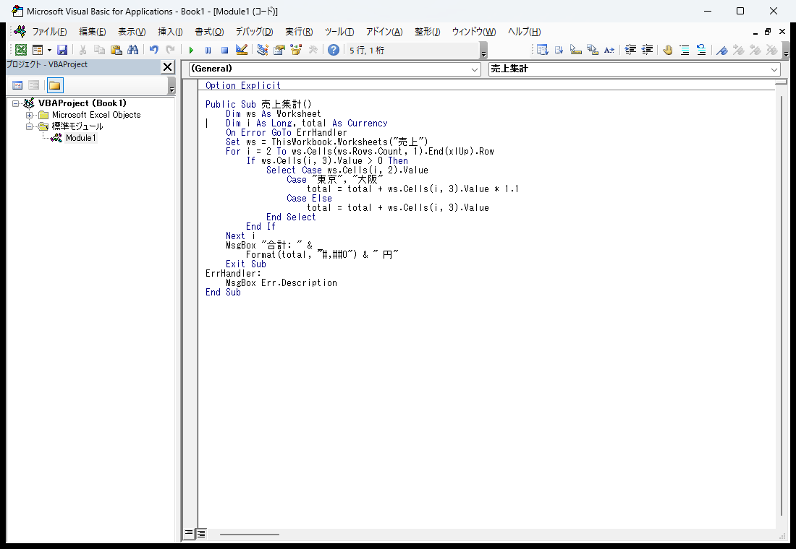

Before / After
崩れたインデントが、一瞬で整う




Features
特長
軽い
DLL 1 つ（約 90KB）だけ。大きなアドインのように、Excel や Access の起動を待たせません。
SmartIndenter の代わりに
有償化された SmartIndenter と同じくらいの機能に絞った、無料のインデント整形です。
行数を変えない
字下げだけを直すので、ブレークポイントの位置もずれません。直前の整形は元に戻せます。
インストールが簡単
install.bat を実行するだけ。管理者権限も、「VBA プロジェクト オブジェクト モデルへのアクセスを信頼する」の設定も要りません。
How to use
使い方
| カーソル位置のプロシージャを整形（複数行を選択しているときは選択範囲） | Ctrl+Shift+F |
|---|---|
| 表示中のモジュール全体を整形 | Ctrl+Shift+M |
| プロジェクト全体を整形・直前の整形を元に戻す・設定 | メニュー「整形」から |
If・Select Case・For・Do・With・Type・Enum・#If などに合わせて字下げします。インデント幅、タブの使用、Case を字下げするかどうか、ショートカットキーは、プレビュー付きの設定画面で変えられます。画面は日本語と英語に対応しています。
Download
ダウンロードとインストール
最新版: 1.5.1（無料・MIT License）。Windows 10 / 11、Office 2010 以降（Microsoft 365 を含む、32bit / 64bit）。
インストール
- GitHub の Releases から
SnapIndenter-x.y.z.zipをダウンロード - Excel・Access など、Office をすべて終了
- zip を右クリック →「プロパティ」→「許可する」にチェック → OK
- zip を展開して
install.batをダブルクリック - Office を起動し、Alt+F11 で VBE を開くと、メニューに「整形」が増えています
アンインストール
Windows の「設定 → アプリ → インストールされているアプリ」で SnapIndenter を選ぶか、同梱の uninstall.bat を実行してください。
インストール時に「Windows によって PC が保護されました」と出たときは、「詳細情報」→「実行」で続けられます。
Support
サポート
不具合の報告や要望は、GitHub の Issues にお寄せください。整形が崩れるときは、そのコードの例を添えていただけると助かります。
SnapIndenter
Re-indent VBA code with one shortcut.
A free, lightweight add-in for the VBA editor (VBE) in Excel and Access. It doesn't slow down Office startup.
- A single ~90 KB DLL, so Office starts as fast as before
- Ctrl+Shift+F indents the current procedure or selection, Ctrl+Shift+M the whole module
- Only indentation changes, never the number of lines, so breakpoints stay put. You can undo the last indent
- Install by running install.bat. No admin rights, and no need to trust access to the VBA project object model
- Japanese and English UI
Download
Latest version: 1.5.1 (free, MIT License). Windows 10 / 11, Office 2010 or later (including Microsoft 365, 32-bit / 64-bit).
- Download
SnapIndenter-x.y.z.zipfrom GitHub Releases - Close all Office apps
- Right-click the zip → Properties → check "Unblock" → OK
- Extract the zip and double-click
install.bat - Start Office and press Alt+F11. A new "SnapIndenter" menu appears in the VBE
Support